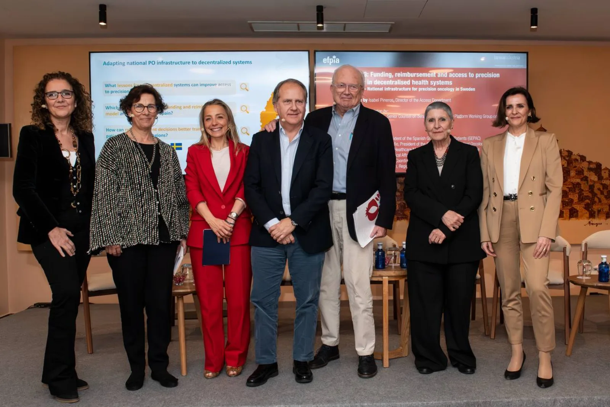
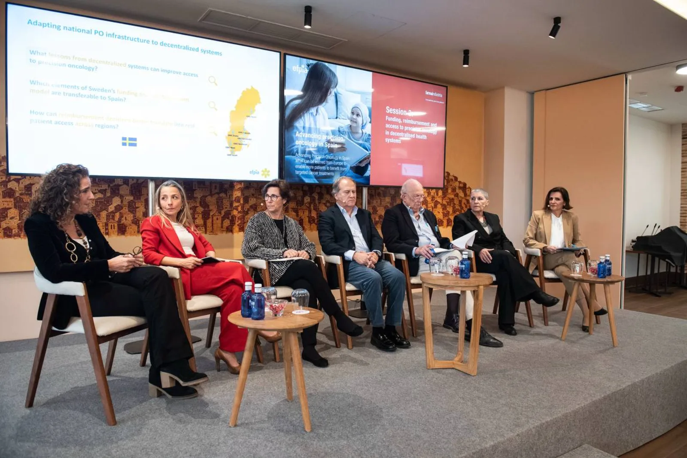

La oncología de precisión se consolida como una herramienta esencial para mejorar la atención al cáncer y reducir desigualdades en el acceso a la innovación. Esta fue la principal conclusión del encuentro Impulsar la Oncología de Precisión en España, celebrado en Toledo con participación de representantes institucionales, profesionales sanitarios, asociaciones de pacientes e industria.
El enfoque de medicina personalizada permite adaptar diagnóstico y tratamiento al perfil biológico de cada paciente, mejorando la eficacia clínica y optimizando recursos. Sin embargo, los participantes coincidieron en que aún existen diferencias territoriales que dificultan un acceso homogéneo a biomarcadores y terapias innovadoras.
Durante la jornada también se presentó el Libro Blanco de la Plataforma de Oncología de Precisión de EFPIA, que plantea prioridades para una implantación efectiva: concienciación, refuerzo de infraestructuras diagnósticas, formación, digitalización y marcos estables de financiación y acceso.
En un sistema descentralizado como el español, se destacó la importancia de una estrategia coordinada para que la innovación llegue antes y de forma equitativa a todos los pacientes, independientemente de su lugar de residencia.
La sesión dejó además una idea transversal: avanzar en medicina de precisión no es solo una cuestión de innovación biomédica, sino también de equidad, organización sanitaria y compromiso institucional.
Lee la noticia entera aquí:
Nota de prensa FarmaIndustria
